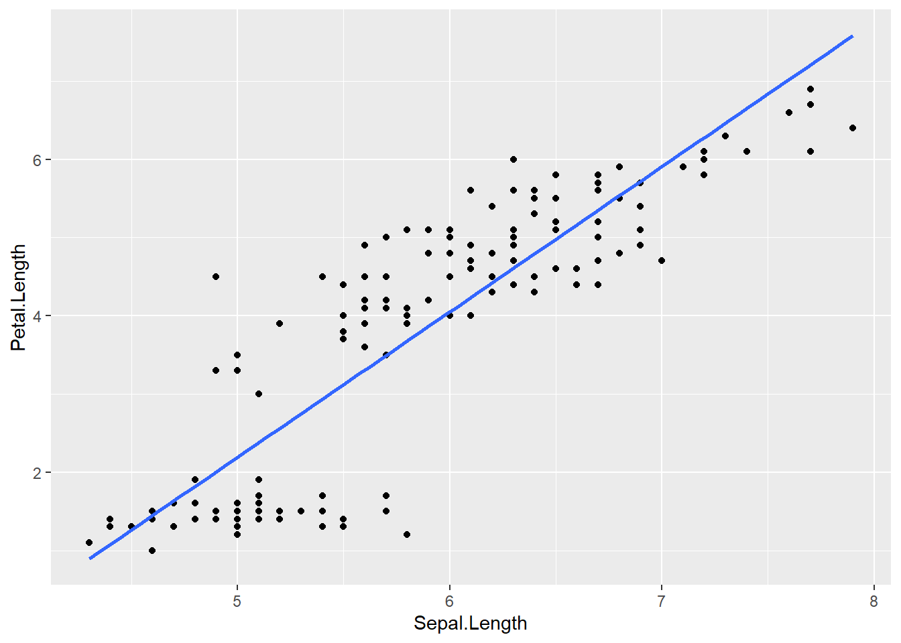
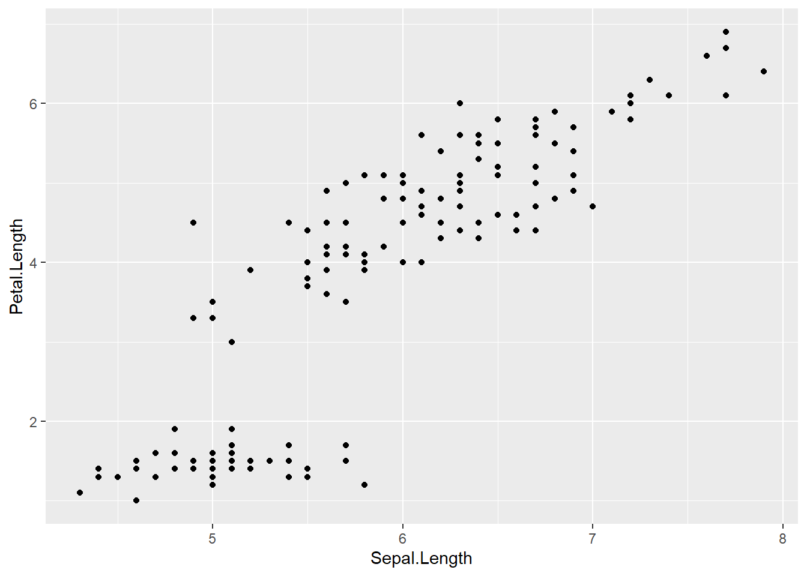
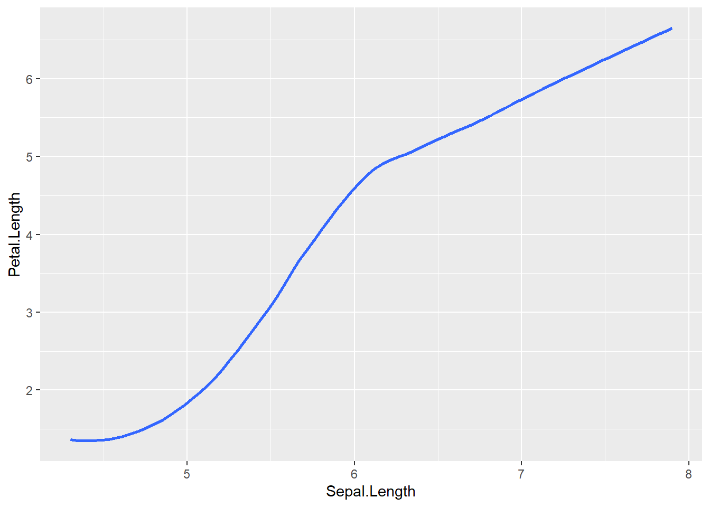
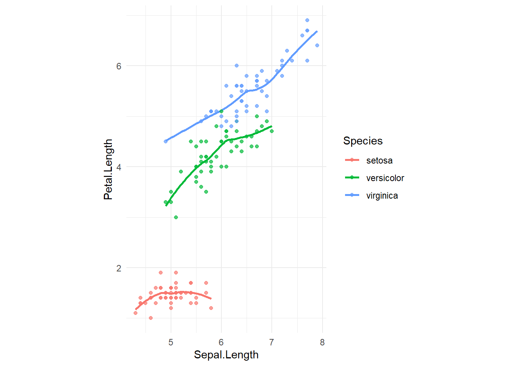
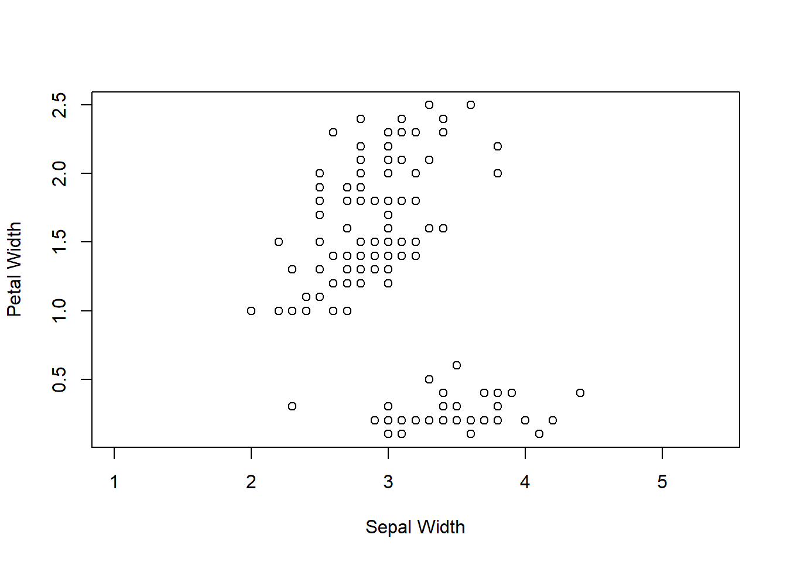
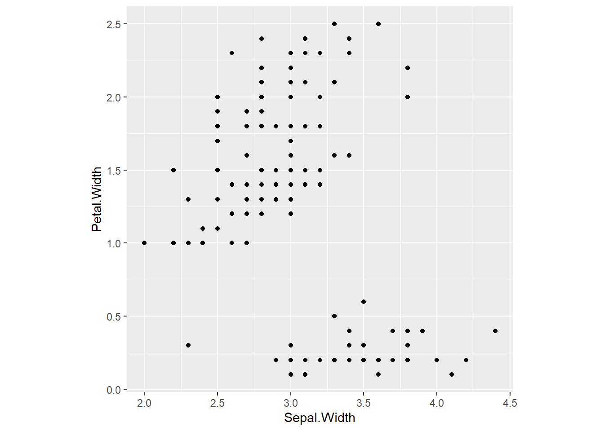
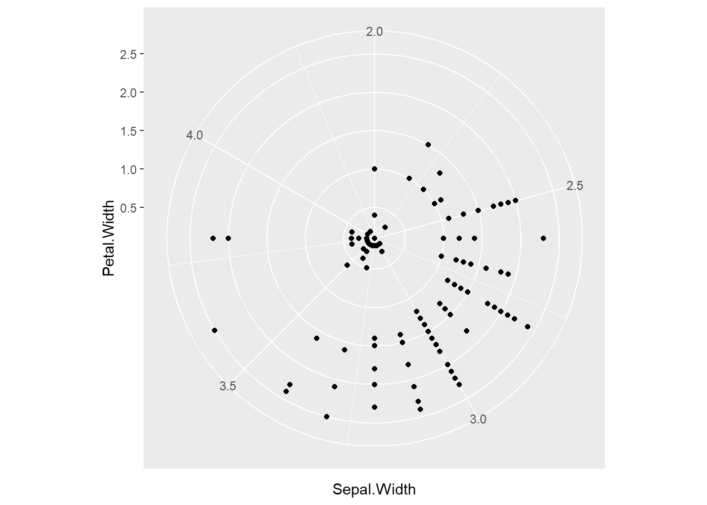

How to use these notes
This is a hands‑on introduction to Object‑Oriented Design using graphics as a motivating context. It is deliberately light on ggplot2 (deep dives come later). Expect ~15 hours of learning across five parts. You’ll read short excerpts, run base‑R code, identify OOD concepts, and reflect. Work in your GitHub Codespace (R is pre‑configured).
0.1 Learning outcomes
By the end, you will be able to:
Distinguish graphs from charts, plots, infographics, and figures.
Explain core OOD ideas (objects, messages, encapsulation, inheritance, polymorphism) and clarify what OOD is not.
Describe an Object‑Oriented Graphics System in terms of Specification → Assembly → Display and the six specification statements (DATA, TRANS, SCALE, COORD, ELEMENT, GUIDE).
Recognise why ggplot2 is considered an OOD‑aligned system (at a high level) without relying on it.
Apply the ideas using base R graphics on simple datasets (e.g., iris) and articulate where OOD helps.
1 Part A — Graphics versus charts
1.0.1 A1. Vocabulary and boundaries
Reading recap (short): - A graph is mathematical (a set of points/relations); a graphic is its perceivable representation. - Charts (bar, pie, line) are named visual forms; useful but limited typologies. - A plot is a specific rendered graphic of data in a coordinate system. - A figure is any labelled visual element in a document (may contain one or more plots/graphics). - An infographic blends data graphics with narrative/illustration for communication.
The key shift: move from thinking of rigid charts to a grammar for constructing graphics.
Task A1.1 — Classify visuals
List five visuals you’ve seen recently (e.g., bar chart of sales, choropleth map, donut chart). For each, label it as chart / plot / figure / infographic and justify in one line.
Task A1.2 — “Same look, different grammar”
Sketch two visuals that look similar (e.g., bars), but explain how their grammar differs (e.g., histogram vs bar chart of categories). One paragraph each.
1.0.2 A2. Rigid Charts
Posit: It is very easy to just have a standard set of charts that everyone should use. These things are already there, no need to re-invent the wheel. Microsoft Excel does a good job of this.
Task A1.3 — In 4–6 sentences, Argue for and against the above position.
Glossary card deck: write a one‑line definition for graph, graphic, chart, plot, figure, infographic.
1.0.3 The Grammar of Graphics (Wilkinson, 2005)
The Grammar of Graphics answers the question: what makes up a statistical graphic? According to the grammar, every plot has a small number of core components that work together:
Data: the dataset containing the information you want to show.
Mappings (aesthetics): instructions for how data variables connect to visual properties like x/y position, colour, size, or shape.
Geometric objects (geoms): the shapes we see in the plot, e.g. points, lines, bars.
Statistical transformations (stats): summaries of the data, such as counts for a histogram, or a fitted regression line.
Scales: links between the data and the visual properties, including axes, legends, and colour keys.
Coordinate system (coords): describes how the data are placed on the page (e.g. Cartesian x–y grid, polar coordinates, map projections).
Facets: break the data into subplots (small multiples) so you can compare groups easily.
Theme: controls the overall look of the plot, such as fonts, grid lines, and backgrounds.
Each of these components is independent, but when combined, they form a complete graphic.
1.0.4 Why This Matters
Most other graphics systems (like base R) are collections of special cases: one function for a scatterplot, another for a bar chart, etc. If you want something slightly new, it can be hard to extend.
In ggplot2, because of the grammar, you describe a plot using higher-level components (data + mappings + geoms + stats + scales). These pieces are designed to fit together, so you can easily build new kinds of plots without starting from scratch.
1.0.5 Example: Iterative Plot Building
You usually start with the raw data, then add layers step by step.
library(ggplot2)
Warning: package 'ggplot2' was built under R version 4.4.3
# Start with raw datap <-ggplot(iris, aes(x = Sepal.Length, y = Petal.Length))# Add a layer: pointsp +geom_point()
# Add another layer: trend linep +geom_point() +geom_smooth(method ="lm", se =FALSE)
`geom_smooth()` using formula = 'y ~ x'

This step-by-step layering reflects the grammar of graphics: you add geoms, scales, and other components to build up your plot.
1.0.6 What ggplot2 Does Not Do
It doesn’t tell you which type of graph to use. That depends on your question and data.
It doesn’t directly support interactive graphics (though packages like plotly can convert ggplot plots into interactive ones).
1.0.7 How ggplot2 Fits with Other R Graphics
Base R graphics: Quick, but limited and hard to modify once drawn. Works like “pen on paper.”
Grid graphics: A more flexible system that ggplot2 builds upon, but not designed for statistical plots directly.
Lattice graphics: Improves on base graphics by making conditioned plots easier, but lacks the formal grammar.
ggplot2: Combines the strengths of both — flexibility, extension, and a solid theory (the grammar of graphics).
Other tools like htmlwidgets and plotly allow interactive plots, and ggplot2 can integrate with them.
1.0.8 Summary
ggplot2 uses a grammar to define plots in terms of simple components.
You build plots by adding layers one by one.
This approach makes ggplot2 flexible, powerful, and easier to extend compared with other graphics systems.
The main components to remember are: data, mappings, geoms, stats, scales, coords, facets, and theme.
2 Part B — Object‑Oriented Design
2.0.1 B1. What is OOD?
Objects are small, purpose-built components. You are an object, but so is your hand
ggplot embodiment: In ggplot2, objects = data, mappings, geoms, scales, stats, coords, themes. You compose them.
Inheritance: classes derive behaviour from more general classes. Both hands inherit the ability to “grip” as limbs
ggplot embodiment: Geoms/stats are ggproto objects: e.g., GeomPoint and GeomPath inherit shared behaviour from base Geom (draw key, handle NA, etc.). Themes also inherit defaults.
```{r}# Same inherited 'Geom' contract; different specialisationp_points <- ggplot(iris, aes(Sepal.Length, Petal.Length)) + geom_point()p_path <- ggplot(iris, aes(Sepal.Length, Petal.Length)) + geom_path()p_points; p_path```
Concept: different geoms share the Geom interface (legend key drawing, required aesthetics), but each refines how data become marks. :::
Polymorphism: same message → different appropriate behaviours. If I say “write,” right hand is neat; left hand scribbles
ggplot embodiment: The “message” draw this mapping yields different results per geom. Same aesthetics, different behaviour.
base <-ggplot(iris, aes(Sepal.Length, Petal.Length))base +geom_point() # same mapping...

base +geom_smooth(se =FALSE) # ...different receiver (geom) → different action
`geom_smooth()` using method = 'loess' and formula = 'y ~ x'

Also polymorphic:print() on a ggplot triggers different device-specific renderers (screen vs. PDF) via the same call. :::
System-level intelligence: elegant behaviour emerges from cooperating objects. Brain, eyes, and hands coordinate so Da Vinci can draw the Monalisa
ggplot embodiment: Data → stat (transform) → position (adjust) → scale (train/map) → coord (project) → geom (render) → theme (layout). The pipeline produces sensible plots with minimal code.
`geom_smooth()` using method = 'loess' and formula = 'y ~ x'

Legends, breaks, and guides “just work” because these objects collaborate through the grammar.
Task B1.1 — Spot OOD in everyday tools
Open the ggplot documentation using ```?ggplot```. Read the help page, and wirte how this help page presents the concepts of encapsulation, inheritance, polymorphism and system-level intelligence
2.0.2 B2. What OOD is not
Not a language: Writing in an OO‑friendly language doesn’t guarantee OO design.
Not a GUI: Interactivity ≠ OO; you can build OO systems without any GUI.
Not just “interactive software”: Behaviour can be scripted; design principles are independent of UI.
3 Part C — An Object‑Oriented Graphics System
3.0.1 C1. Specification → Assembly → Display
Specification: This is the deep grammar of a graphic. It expresses DATA, TRANS, SCALE, COORD, ELEMENT, GUIDE.
Assembly: This is the orchestration of the specified geometry/layout. Responsible for linking components and keeping parts modular.
Display: rendering with device‑specific aesthetics (axes, legends, titles, forms).
Task C2.1 — Identify the six in base R (≈35 min)
Using iris, produce a basic scatter using base R only and annotate which line corresponds to each statement.
# Base R scatter with a reference line (no ggplot2)plot(iris$Sepal.Length, iris$Petal.Length,xlab ="Sepal Length", ylab ="Petal Length",col =as.integer(iris$Species), pch =19)legend("topleft", legend =levels(iris$Species),col =1:3, pch =19, bty ="n")abline(a =0, b =1, lty =2) # a simple "form" guide
Task: Mark/discuss DATA / TRANS / SCALE / COORD / ELEMENT / GUIDE for the plot above. (Hint: axes/legend/abline are GUIDE.)
3.0.3 C3. Mini‑examples (3–4 quick studies)
Example 1 — Labels instead of points
Replace points with short labels to show ELEMENT swap while holding the spec constant.
A common point of confusion is the difference between transforming the data versus transforming the scale. These are not the same, even if the plots end up looking similar.
3.0.4 Data Transform
Here we apply log10() directly to the data before plotting:
Only the axis labels are modified, giving the appearance of a log transformation.
In Grammar of Graphics terms, this is a crude substitute for altering the SCALE stage.
3.0.6 Why the Distinction Matters
Transforming data changes the underlying statistical relationships. For example, regression lines fitted on log10(Sepal.Length) are not the same as those fitted on raw values.
Transforming scales only changes how values are displayed, not how the underlying analysis is performed.
In base R you often have to manage these steps manually, which can blur the distinction. In ggplot2, the difference is explicit:
# Data transformggplot(iris, aes(log10(Sepal.Length), Petal.Length)) +geom_point()
Both produce similar looking plots, but in the second case the data are untouched — only the scale mapping is log-transformed.
Example 3 — Coordinates
Changing the coordinate system is not the same as changing the data or the scales. Coordinates determine how data positions map onto the plotting surface.
3.0.7 Aspect Ratio Change (Base R)
In base R you can set the aspect ratio with asp, but this is not a true coordinate transformation — it only changes how units on the axes are displayed relative to each other:
plot(iris$Sepal.Width, iris$Petal.Width, asp =1,xlab ="Sepal Width", ylab ="Petal Width")

The data remain unchanged.
Only the shape of the plotting window changes so that one unit on the x-axis equals one unit on the y-axis.
This is the closest base R offers to coordinate system control — true remapping (like polar coordinates) is very limited.
3.0.8 ggplot2 Example
In ggplot2, coordinates are explicit and extensible:
ggplot(iris, aes(Sepal.Width, Petal.Width)) +geom_point() +coord_equal() # true equal aspect ratio

# Or even polar coordinatesggplot(iris, aes(Sepal.Width, Petal.Width)) +geom_point() +coord_polar()

Here coord_equal() is the ggplot2 equivalent of asp = 1, but you can also switch to entirely new coordinate systems such as coord_polar().
Task C3.1 — Write the spec lines
For Example 1 and Example 2, write six‑line specs.
Checkpoint C
In 3–4 sentences, explain why keeping spec separate from assembly helps revision.
4 Part D — ggplot2 at a slightly deeper glance
Purpose here: historical context and OOD flavour — not a full tutorial.
Why OOD‑aligned? Layers, scales, coords, guides behave like objects with clear responsibilities and message‑passing via the + operator.
Task D1.1 — Read & tell
Read: https://ggplot2-book.org/introduction.html. Then in 120–150 words: Summarise why ggplot2 reflects an OOD mindset (encapsulation, polymorphism of geoms, replaceable scales/guides).
5 Part E — Tutorials: base‑R first
5.0.1 E1. Identify grammar pieces in base R
Recreate three simple visuals using only base R and, for each, label the six spec statements.
1. Scatter with legend and a dashed reference line.
2. A grouped line plot (e.g., means by species across an index).
3. A labelled plot (replace points with first letters of species).
5.0.2 E2. Simulate a tedious task that OOD solves better
Pick one of the following tasks and attempt it with base R and with GGPlot:
Make the same scatterplot (e.g., one variable vs another, coloured by species) several times for different subsets of the data, keeping the axes and legend consistent, and save each plot as a separate file.
Make one scatterplot and then add another summary on top (for example, a smoothed line or average points). Add a custom legend and adjust the axis labels (for example, make the x-axis show transformed or “log-like” labels)
Think: Why is this repetitive? Which parts should be “objects” (reusable units)?
5.0.3 E3. Reflection
In ~200 words, describe where base‑R plotting felt brittle or repetitive, and how an OOD/grammar approach could reduce effort and increase reproducibility.
5.1 Common pitfalls & tips
Spec vs code: If you can’t state the six spec lines in words, your code will be harder to maintain.
Transform vs scale: Data transforms change values; scale changes mapping/labels.
Over‑customising early: Get ELEMENT and SCALE right before adjusting GUIDE styling.
You’re set for the follow‑up sessions where we’ll dive into ggplot2 layering, facets, stats, themes, and coordinates with the OOD lens in mind.